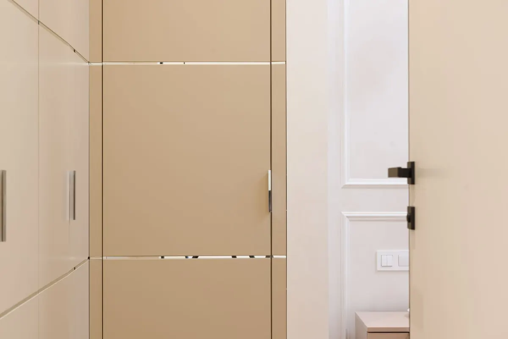
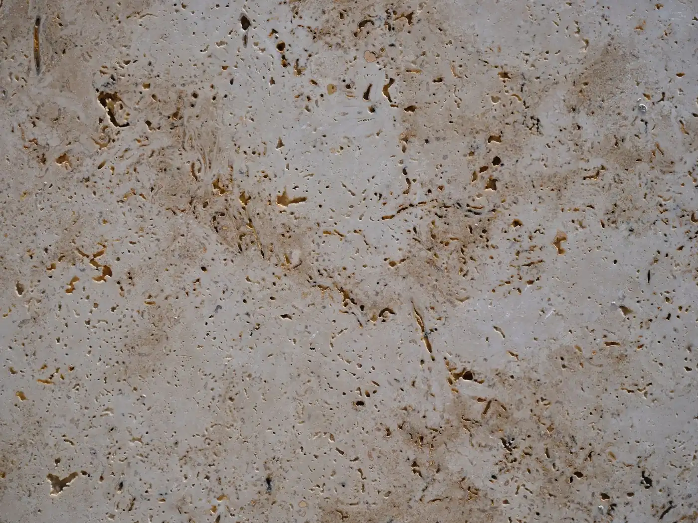
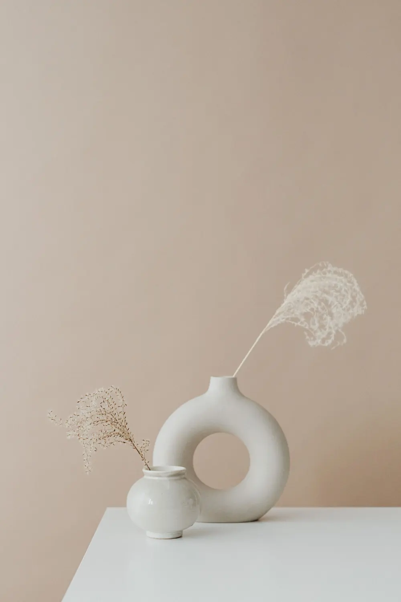
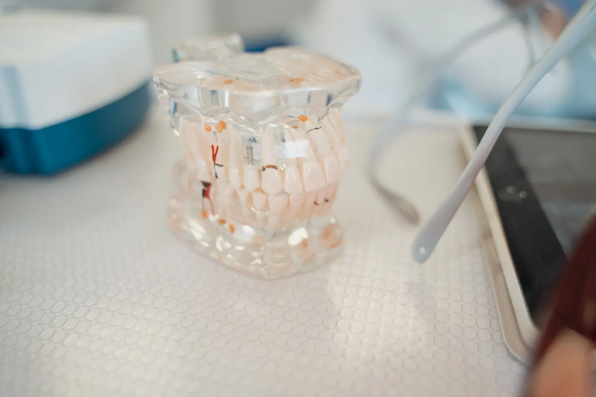
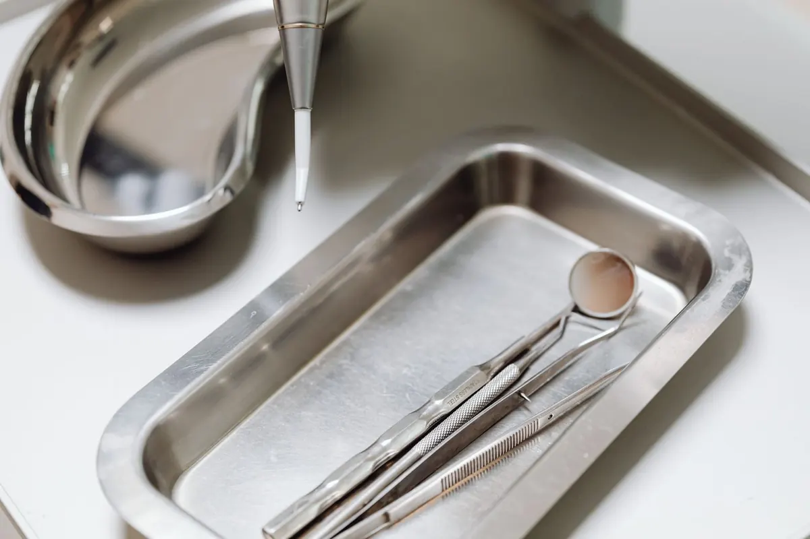

InícioA clínica
Um ateliê, não uma linha de produção
Uma clínica pequena de propósito: poucos pacientes por dia, consultas com tempo reservado e a mesma equipe do começo ao fim do tratamento.

01 O espaço
Luz natural e silêncio
Dois consultórios, uma sala de planejamento e uma recepção pensada para esperar pouco. Acesso por elevador e banheiro adaptado.






Fotos ilustrativas de banco de imagens. No site real, entram as fotos da clínica.
02 Profissionais
A equipe
Nomes e registros de exemplo. No site real, cada profissional aparece com foto, formação e número de inscrição no CRO.
Dra. Helena Valadares
Ortodontia · responsável técnica · CRO-SP 000000 (exemplo)
Especialista em ortodontia. Coordena o planejamento dos casos de aparelho e alinhadores e acompanha cada etapa de perto.
Dr. Rafael Moretti
Dentística e estética · CRO-SP 000001 (exemplo)
Cuida de lentes de contato dental, restaurações e clareamento, sempre depois do estudo do sorriso e da saúde da gengiva.
Dra. Lívia Okamoto
Periodontia e planejamento digital · CRO-SP 000002 (exemplo)
Avalia a saúde da gengiva antes dos tratamentos e prepara os modelos digitais e as simulações usadas nas consultas.
03 Registros
Identificação da clínica
Informações que a clínica deve manter visíveis, conforme as normas do Conselho de Odontologia.
- Razão social
- Atelier Oral Odontologia Ltda. (exemplo)
- CNPJ
- 00.000.000/0001-00 (exemplo)
- Inscrição no CRO-SP
- EPAO nº 00000 (exemplo)
- Responsável técnica
- Dra. Helena Valadares · CRO-SP 000000 (exemplo)

04 Cuidados
Biossegurança
- Instrumental esterilizado em autoclave, com registro de cada ciclo
- Materiais descartáveis de uso único
- Limpeza do consultório entre um paciente e outro
- Intervalo entre consultas para não haver espera